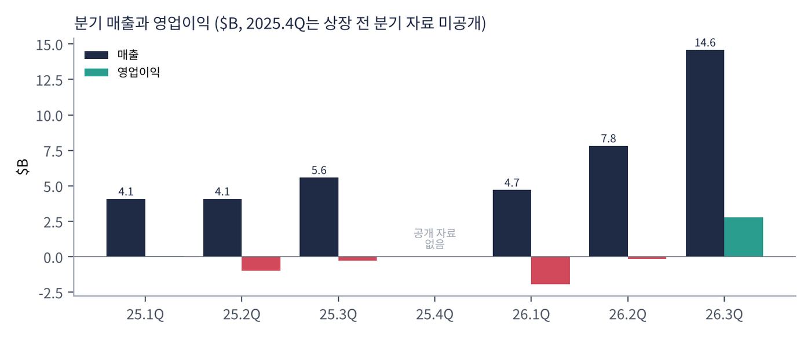
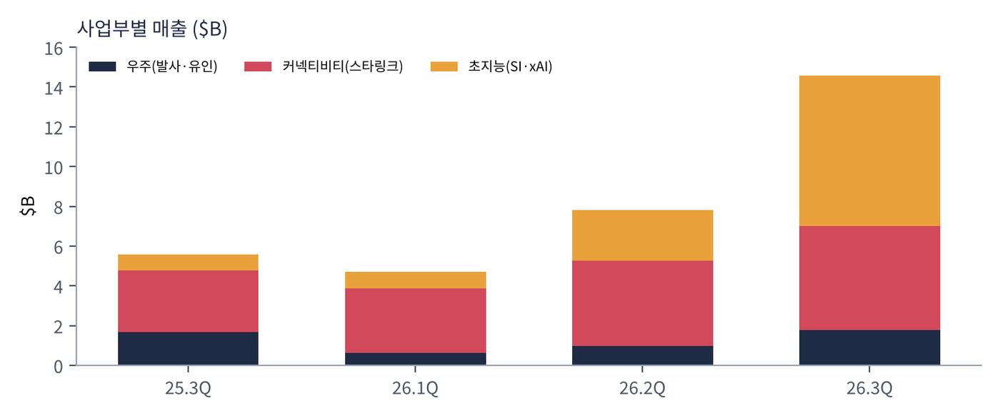
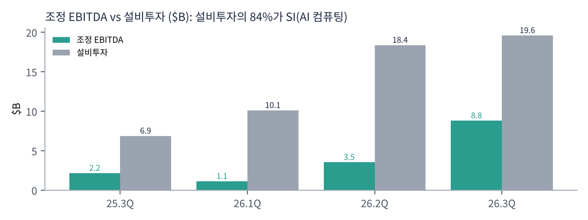
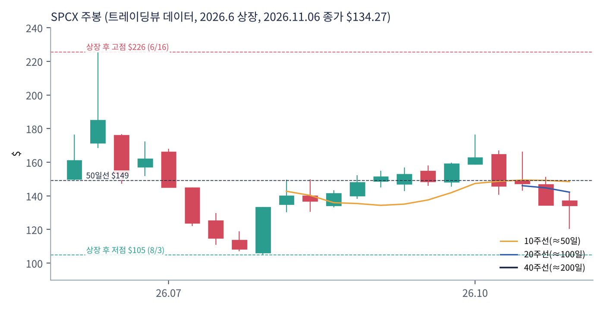
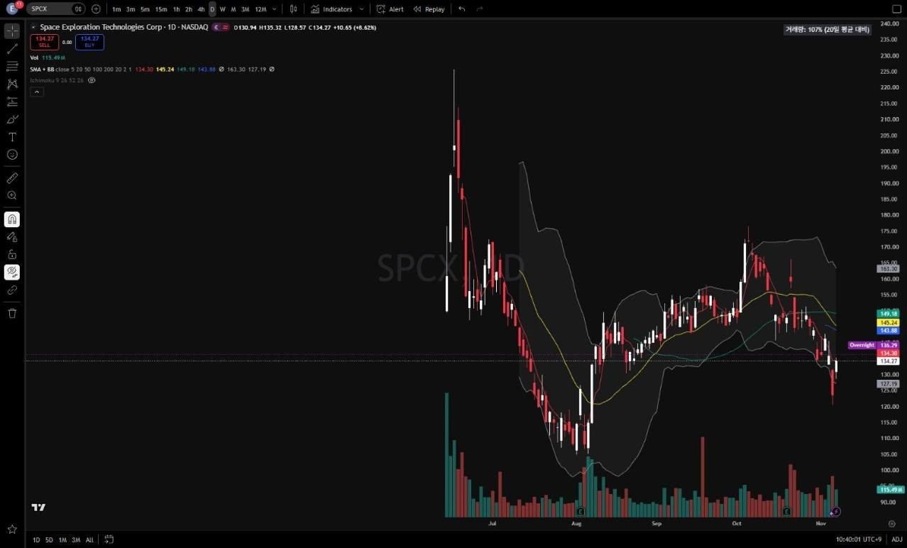

스페이스X는 일론 머스크가 2002년 세운 우주 회사다. 재사용 로켓 팰컨 9으로 세계 발사 시장을 장악했고, 위성 인터넷 스타링크로 전 세계 수백만 명에게 인터넷을 공급한다. 2026년 공시에는 '초지능(SI)' 부문이 새로 등장했는데, 그록(Grok) AI 모델과 클라우드 연산, AI 코딩 도구 커서(Cursor) 인수를 포함한다. 머스크의 AI 회사 xAI의 사업이 통합된 것으로 보인다. 2026년 6월 나스닥에 상장했다.
| 항목 | 내용 |
|---|---|
| 종목 | Space Exploration Technologies Corp. (SPCX) · 우주·통신·AI · 2002년 설립 · 본사 텍사스주 스타베이스 |
| 경영진 | 일론 머스크 창업자 겸 CEO |
| 시가총액 | 약 $1.82조 (트레이딩뷰, 11/6 종가 기준) |
| 최근 분기(3Q26) | 매출 $145.8억, 영업이익 $27.9억, 순이익 $44.0억 |
| 상장 | 2026년 6월, 상장 첫 주 $150~176 |
| 분기 | 매출 | 우주 | 커넥티비티 | SI | 영업이익 | 조정 EBITDA | 설비투자 |
|---|---|---|---|---|---|---|---|
| 2025.1Q | $40.7억 | 상반기 합계: 우주 $16.1억 · 커넥티비티 $50.6억 · SI $14.7억 | $0.3억 | $29.4억(상반기) | $69.7억(상반기) | ||
| 2025.2Q | $40.7억 | -$9.7억 | |||||
| 2025.3Q | $55.8억 | $16.7억 | $31.0억 | $8.1억 | -$2.7억 | $21.7억 | $68.8억 |
| 2025.4Q | 상장 전 분기 자료 미공개 | ||||||
| 2026.1Q | $46.9억 | $6.2억 | $32.6억 | $8.2억 | -$19.4억 | $11.3억 | $101.1억 |
| 2026.2Q | $78.1억 | $9.6억 | $42.9억 | $25.6억 | -$1.4억 | $35.4억 | $183.7억 |
| 2026.3Q | $145.8억 | $17.7억 | $52.5억 | $75.6억 | $27.9억 | $88.1억 | $195.9억 |

3분기에 매출이 한 분기 만에 거의 2배가 됐다. $78억에서 $146억으로 늘어난 $68억 중 $50억이 SI다. 회사는 SI 매출 증가 요인으로 클라우드 서비스 계약(AI 연산 임대), 커서 인수, 그록 봇 같은 자체 AI 모델·소프트웨어를 들었다. 즉 3분기 실적의 '폭발'은 로켓이나 스타링크가 아니라 AI에서 왔다.

세 사업의 성격이 완전히 다르다. 커넥티비티(스타링크)는 매출 $52억, 영업이익률 45%의 안정적인 현금 사업이다. 우주(발사·유인 우주선)는 매출이 들쭉날쭉하고 스타십 개발비로 적자와 흑자를 오간다. SI는 막 흑자로 돌아섰지만 투자 규모가 가장 크다.

설비투자의 84%가 AI다. 3분기 설비투자 $196억 중 SI가 $164억이다. 1~9월 누적 설비투자는 $481억으로, 같은 기간 조정 EBITDA $135억의 3.6배다. CFO는 "투자등급 재무구조를 유지하면서 자본 효율에 집중한다"고 했지만, 이 속도의 투자는 외부 자금(상장 자금·차입)이 뒷받침해야 가능하다.
순이익($44억)이 영업이익($28억)보다 큰 것은 영업 외 이익(투자 평가이익 등)이 반영된 결과로 보인다. 세부 내역은 10-Q로 확인이 필요하다.
트레이딩뷰 SPCX 일봉 103개(2026.6.12 상장 ~ 11.6)와 주봉으로 계산했다. 결론부터 말하면 상장 직후 $226까지 급등했다가 7주 만에 $105(-54%)로 떨어졌고, 이후 $105~176 사이 박스권이다. 데이터가 짧아 장기 신호는 아직 없다.


위: 주봉 재구성 차트. 아래: 트레이딩뷰 일봉 캡처(작도 없이 이동평균선·볼린저밴드만 표시).
| 이동평균 | 값 | 종가 대비 | 해석 |
|---|---|---|---|
| 5일선 | $134.3 | 0.0% | 금요일 +8.6%로 회복 |
| 20일선 | $145.2 | -7.6% | 10월 박스 하단 |
| 50일선 | $149.2 | -10.0% | 9~10월 평균 |
| 100일선 | $143.9 | -6.7% | 상장 후 거의 전 기간 평균 |
| 200일선 | — | — | 상장 103일로 계산 불가 |
주봉 흐름: 6월 둘째 주 상장 $150 → 셋째 주 장중 $226 → 7월 내내 하락, 7월 말 $107 → 8/4 2분기 실적 주 +23%($106 → $133) → 9월 $148~155 → 10월 첫째 주 $176 → 10/20 3분기 실적 주 $147 → 11월 첫 주 장중 $120 → $134 마감.
| 규칙 | 기준 | 현재 값 | 신호 |
|---|---|---|---|
| 장기 추세 필터 | 종가 vs 200일선 | 데이터 부족 | — |
| 중장기 교차 | 50일선 vs 200일선 | 데이터 부족 | — |
| 단기 교차 | 20일선 vs 50일선 | $145.2 < $149.2 | 매도 |
| 돈키언 채널 | 55일 고가 $176.4 / 저가 $120.4 | 중간값 $148.4 아래 | 매도 |
| 1개월 모멘텀 | 21거래일 수익률 | -16.4% (기준 $160.6) | 매도 |
| 3개월 모멘텀 | 63거래일 수익률 | -3.2% (기준 $138.7) | 매도 |
| 6·12개월 모멘텀 | 126·252거래일 | 데이터 부족 | — |
| 종합 (4개 평균) | -1.00 | 매도 | |
해석: 계산 가능한 4개 신호가 모두 매도지만 신호 수가 적어 신뢰도는 낮다. 3개월 기준가($138.7)가 현재가와 3%밖에 차이 나지 않아 작은 반등에도 점수가 -0.5로 올라간다. 14일 ATR $8.9(6.7%). 2027년 3월 이후 200일선이 생기면 8개 신호 모두로 판단할 수 있다.
| 가격 | 무엇이 바뀌나 | 의미 |
|---|---|---|
| $138.7 | 3개월 기준가 | 회복 시 점수 -0.5 |
| $145 ~ 149 | 20·50·100일선, 돈키언 중간값 | 회복 시 점수 +0.5 가능 |
| $120 이탈 | 55일 저점 | 상장 후 저점($105) 시험 |
| 구분 | 가격대 | 근거 |
|---|---|---|
| 저항 2 | $160 ~ 176 | 10월 고점, 1개월 기준가 |
| 저항 1 | $144 ~ 149 | 20·50·100일선 밀집 |
| 지지 1 | $120 ~ 125 | 11월 저점 |
| 지지 2 | $105 ~ 108 | 7~8월 상장 후 저점 |
기본 판단: 숫자는 막 좋아지기 시작했고, 가격은 아주 먼 미래를 반영한다. 3분기 연환산 매출은 약 $580억, 시가총액은 그 31배다. 커넥티비티 이익(분기 $24억)만으로는 설명이 안 되고, SI(AI)와 스타십(화성·궤도 데이터센터 같은 장기 구상)의 가치가 대부분이다. 시장 일각에서는 궤도 데이터센터 구상도 언급된다(트레이딩뷰 요약). 이런 종목은 실적보다 이벤트·수급으로 움직여 박스권 매매가 유효하다.
| 가격대 | 시나리오 | 대응 |
|---|---|---|
| $170 이상 | 박스 상단 | 2차 익절 |
| $144 ~ 149 | 이동평균선 밀집 | 돌파 시 추가, 실패 시 1차 익절 |
| $120 ~ 134 | 박스 하단 | 분할 매수 80% |
| $112 이하 종가 | 지지 붕괴 | 손절 |
| 사업부 | 돈을 버는 방식 | 3Q26 | 영업이익 |
|---|---|---|---|
| 우주 (Space) | 팰컨 9·스타십 발사(정부·민간 위성), 드래곤 유인·화물 우주선(NASA 등) | $17.7억 | -$0.07억 |
| 커넥티비티 | 스타링크 위성 인터넷 구독(가정·기업·항공·해운·정부), 단말기 판매 | $52.5억 | $23.7억 |
| 초지능 (SI) | AI 연산 클라우드 계약, 그록 모델·그록 봇, 커서(AI 코딩 도구) 구독 | $75.6억 | $4.3억 |
스타링크가 회사 전체를 떠받친다. 1~9월 커넥티비티 영업이익 $52억은 우주(-$12억)와 SI(-$33억)의 손실을 메우고도 남는다. 3분기에는 SI가 처음 흑자로 돌아서며 세 사업 중 두 개가 이익을 냈다. 스타십이 상용화되면 위성 배치 비용이 크게 내려가 스타링크 이익이 더 커지는 구조다(스타십 1회 발사가 팰컨 9 대비 약 10배 용량).
CFO 코멘트다. "발사 리더십, 반복되는 스타링크 매출, SI 인프라의 대규모 확장이 결합해 의미 있는 운영 레버리지를 만들고 있다. 우리는 미래의 인프라를 규율 있게 짓고 있다."
| 축 | 내용 |
|---|---|
| 발사 | 재사용 로켓으로 발사 비용을 낮추고, 스타십으로 한 번 더 낮춤 |
| 연결 | 스타링크 V3 위성으로 용량 대폭 확대. 기업·정부 채택 가속 |
| 지능 | 1.7GW 연산 용량, 자체 모델(그록), AI 소프트웨어(커서). 장기적으로 궤도 데이터센터 구상도 거론 |
| 사업 | 회사의 말 (3Q26) | 읽는 법 |
|---|---|---|
| 커넥티비티 | "기업·정부 채택의 강한 모멘텀, 스타링크 소비자 가입자 증가 지속." 매출 +69%, 영업이익 +99%(1~9월 기준) | 가장 확실한 성장 |
| SI | "SI 사업의 분명한 변곡점." 전년 대비 SI 매출 $67억 증가 | AI가 새 성장축 |
| 우주 | 첫 매출 스타십 발사 성공 | 스타십 상용화 시작 |
수요 측면에서 가장 확실한 것은 스타링크다. SI는 3분기에 급격히 커졌지만 클라우드 계약·인수 효과가 섞여 있어 지속성은 몇 분기 더 확인이 필요하다.
조정 EBITDA $35.0억(마진 67%). 분기 설비투자 $15억 수준으로 현금 창출력이 매우 크다.
조정 EBITDA $49.5억, 그러나 설비투자 $164억. 투자 대비 회수는 아직 초기다.
조정 EBITDA $3.6억. 스타십 개발비로 영업이익은 손익분기 수준이다.
CFO는 투자등급 재무구조를 강조했다. 세부 현금·부채는 10-Q 확인이 필요하다.
| 경쟁/리스크 | 내용 | 강도 |
|---|---|---|
| 밸류에이션 | 연환산 매출의 약 31배. 장기 구상에 대한 기대가 가격의 대부분 | 높음 |
| AI 투자 부담 | 1~9월 설비투자 $481억, 대부분 SI | 높음 |
| 경영 집중도 | 머스크가 테슬라 등 여러 회사를 동시에 경영 | 중간 |
| 경쟁 | 위성 인터넷(아마존 카이퍼), 발사(블루 오리진), AI(오픈AI·구글·앤스로픽) | 중간 |
| 수급 | 상장 후 보호예수 해제 물량 | 참고 |
다음 실적은 약 3개월 뒤(2월 말)다. 그 전까지는 스타십 발사, 스타링크 지표, SI 계약 같은 이벤트와 보호예수 수급이 주가를 움직인다. $120~176 박스 대응이 합리적이다.
스타십 상용화로 스타링크 비용이 내려가고 SI 투자가 이익으로 바뀌기 시작하면 지금의 가격도 정당화될 수 있다. AI 투자 회수가 늦어지면 스타링크 이익이 그 비용을 감당해야 한다.